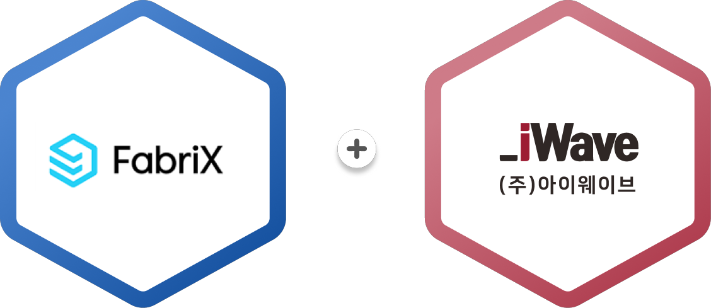

공공기관의 정보보안 원칙과 개인정보 보호 규정을 준수하면서, 대국민 서비스 품질을 혁신하기 위한 6대 핵심 요소기술을 통합적으로 제공합니다.
공공 도메인 특화 프롬프트 엔지니어링, sLLM 파인튜닝, LLMOps 기반 안정적 운영 환경을 통해 대국민 서비스 및 내부 업무 자동화를 지원합니다.
법령·규정·매뉴얼 등 공공 문서 자산을 벡터DB로 인덱싱하여, 근거 기반의 신뢰도 높은 답변을 실시간 제공하는 검색증강생성 아키텍처를 구축합니다.
OWL/RDF 기반 지식 체계화, SPARQL 질의 엔진, LOD 연계를 통해 법령·행정규칙·공공 데이터의 의미 기반 통합과 논리적 추론을 실현합니다.
Multi-Agent 협업 구조와 RPA·BPA 통합을 통해, 민원 처리·문서 검토·의사결정 지원 등 복합 업무의 자율적 수행 체계를 구현합니다.
데이터 수집–전처리–학습–배포–모니터링의 전주기 자동화 체계와 모델 거버넌스로 지속가능한 AI 서비스 운영 기반을 마련합니다.
망분리 환경 최적화, 개인정보 비식별화, 프롬프트 필터링, 설명가능AI(XAI) 적용으로 공공부문에 요구되는 신뢰성·투명성·감사적합성을 확보합니다.
(주)아이웨이브는 국내 최대 규모의 기업용 생성형 AI 플랫폼 삼성SDS FabriX의 공식 파트너로서, 공공기관 맞춤형 AI 서비스 구축·공급·운영을 원스톱으로 지원합니다.
FabriX(패브릭스)는 기업의 데이터·지식자산·업무시스템 등 IT 자원을 생성형 AI와 연결하여 임직원이 손쉽게 공유·활용할 수 있도록 지원하는 클라우드 기반 기업용 생성형 AI 서비스 플랫폼입니다. 삼성 클라우드 플랫폼(SCP) 기반의 강력한 보안체계 위에서, 다양한 LLM 연계·RAG·AI Agent 구축·LLMOps를 통합 지원하며, 행정안전부 범정부 초거대 AI 인프라 사업 등 국내 주요 공공기관에 검증된 플랫폼입니다.
기업 내·외부 시스템, 데이터, 지식자산을 하나의 카탈로그로 통합
SCP 기반 프라이빗 클라우드, 인증·권한 관리, 프롬프트 필터링
다양한 LLM을 상황별 최적 선택 가능한 유연한 LLMOps 환경
Low-Code 기반 맞춤형 AI Agent 개발 및 협업 환경 제공
삼성SDS의 검증된 플랫폼 기술력과 아이웨이브의 공공정보화 사업 수행 역량이 결합하여,
정부 및 공공기관 고객이 안심하고 도입할 수 있는 최고 수준의 AI 서비스 환경을 제공합니다.
